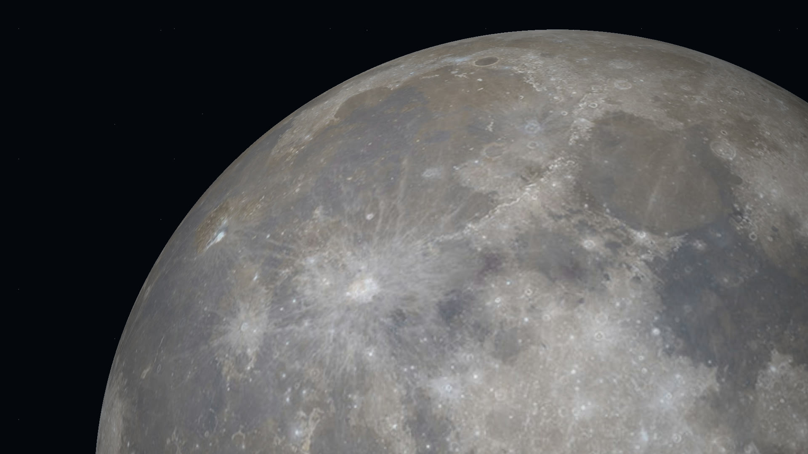
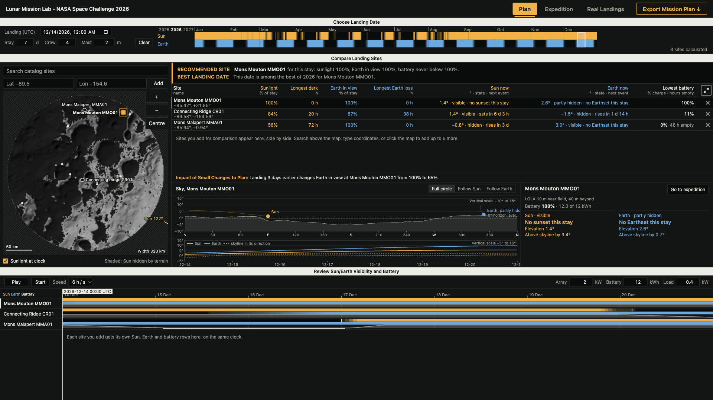
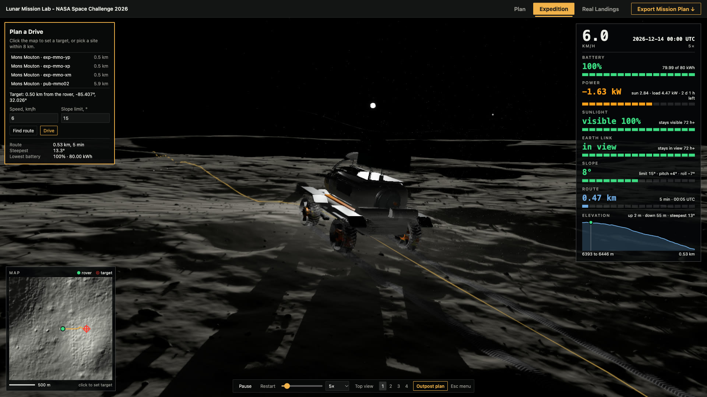
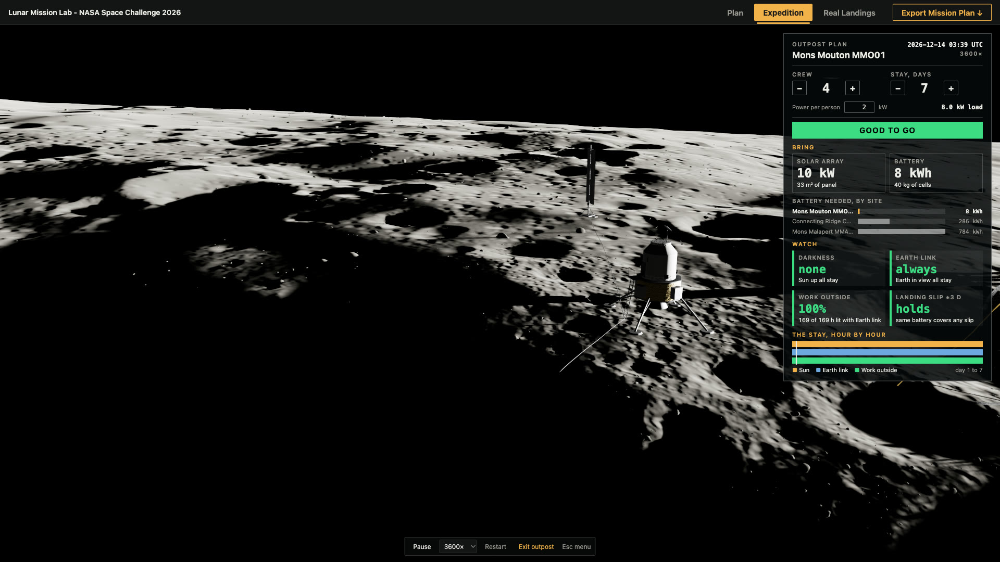
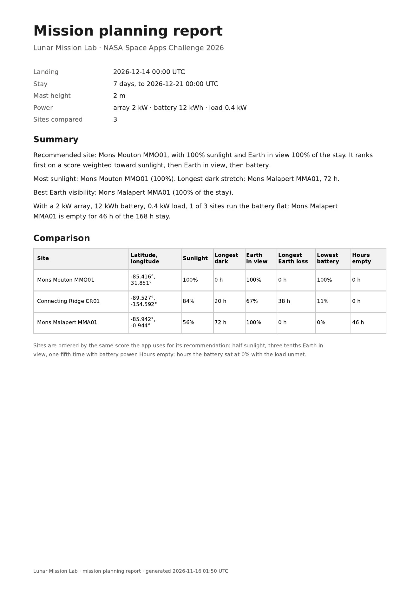
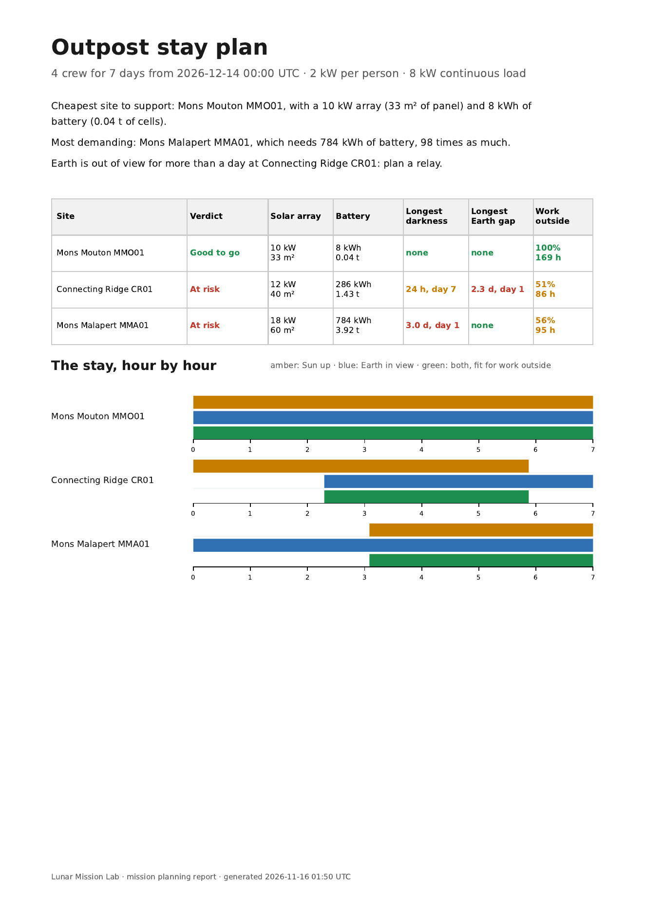

NASA Space Apps Challenge 2026 · Lunar Landing Site Navigator
Choose where and when to land near the Moon's south pole, and what a crew needs once there.
lunarlab.rs25labs.com
Open the link and press Demo Walkthrough for a guided tour.
The problem
7-day stay from 14 December 2026, 2 m mast
| Site | Sunlight | Longest dark |
|---|---|---|
| Mons Mouton MMO01 | 100% | 0 h |
| Connecting Ridge CR01 | 84% | 20 h |
| Mons Malapert MMA01 | 56% | 72 h |
Lunar Mission Lab shows this on one screen in under a minute.
What it does · Plan

1 2 3 4 5How it works
10 m map near the site, 40 m out to 150 km, global map elsewhere. The skyline is traced every 2° all around.
DE421 positions of the Sun and Earth for any date from 1969 to 2035, with light time and libration.
How much of the Sun's disc and Earth's disc clears the skyline. No air on the Moon, so no refraction. Sunrise, sunset, Earthrise and Earthset found to about a minute.
Sunlight share, longest dark, Earth in view, longest Earth gap, battery level over the stay.
The screen, the 3D view and the PDF report all use the same calculation, redone on the server.
Built with Python (SpiceyPy, NumPy), TypeScript, Svelte and three.js. Runs in any browser, nothing to install.
What it does · Expedition

The site built from NASA heights, lit by the Sun from its true position. The rover follows a route that avoids steep slopes, and shows battery, power, time to sunset and time until Earth sets.

The outpost plan takes the crew size and days, works out the solar panels and battery to bring at each site, and marks darkness, Earth contact, work time and launch slip in green, orange or red.
Benefits and impact


Try it
No sign-in. Press Demo Walkthrough on the start page for a 3-minute guided tour.
Relay-satellite visibility next to direct Earth contact. Guided classroom missions. Exact CLPS landing points and international sites as they are announced.
NASA LOLA terrain (PDS Geosciences Node). JPL NAIF SPICE kernels. Candidate sites from Wueller et al. (2026). Landing sites from NASA NSSDC. CLPS regions from NASA's deliveries list and the USGS Gazetteer.
github.com/rs25-labs/nasa-2026
Python, TypeScript, Svelte, three.js. Hosted on Vercel.
Code written with AI coding assistants. Every result is calculated from NASA and JPL data, not by a language model.